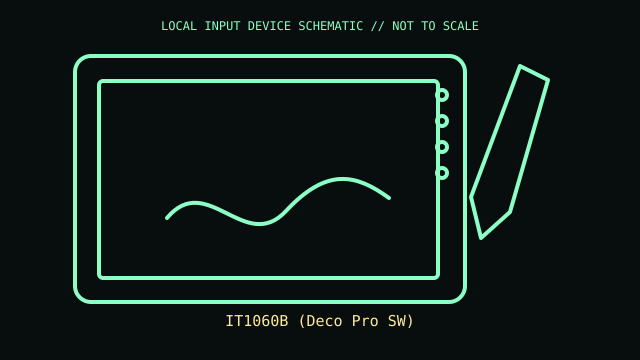

[ PEN TABLETS AND DIGITIZERS // IDENTIFIED COMPONENT ]
XP-Pen Deco Pro SW
Wireless-capable pen tablet with dual wheel and shortcut keys.

MODEL IDENTIFICATION: IT1060B (Deco Pro SW). Confirm the printed SKU, revision, bundle, region, and included accessories before repair or compatibility claims.
Model specifications
| Catalog leaf | Pen tablets and digitizers |
|---|---|
| Exact model / identifier | IT1060B (Deco Pro SW) |
| Mechanism and primary specifications | Medium tablet active area about 9 × 5 in; eight keys and dual wheel; battery-free stylus with pressure/tilt; Bluetooth and USB wired modes. |
| Compatibility and interface caveats | IT1060B is SW wireless model; MW/other Deco Pro versions have different size/connectivity. Driver and Bluetooth host support depend on OS/application. |
| Revision identification | Record the full label and software/firmware revision. Similar product-family names may use different protocols, components, connectors, or bundled accessories. |
Preservation and service
Charge internal battery per manual; protect wheel assembly and stylus nib, and retain wireless receiver/cable supplied with exact kit.
Separate observed condition and test setup from vendor-published specifications; record host OS, driver/app version, cables, adapters, and accessories.
Primary manufacturer sources
- XP-Pen Deco Pro SW productManufacturer documentation; verify the exact SKU, revision, region, and accessories against the unit label.
- XP-Pen support downloadsManufacturer documentation; verify the exact SKU, revision, region, and accessories against the unit label.
Manufacturer support pages can change; retain the applicable manual and its revision in the physical equipment record.